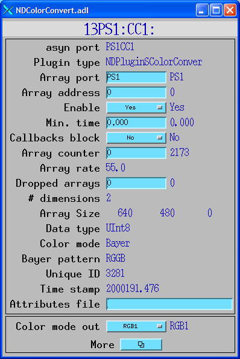

NDPluginColorConvert is a tool for converting the color mode of NDArray data. It receives an input NDArray with one color mode and outputs another NDArray with a (potentially) different color mode. All other attributes of the array are preserved.
NDPluginColorConvert inherits from NDPluginDriver. The NDPluginColorConvert class documentation describes this class in detail.
NDPluginColorConvert defines the following parameters. It also implements all of the standard plugin parameters from NDPluginDriver . The EPICS database NDColorConvert.template provides access to these parameters, listed in the following table.
| Parameter Definitions in NDPluginColorConvert.h and EPICS Record Definitions in NDColorConvert.template | ||||||
| Parameter index variable | asyn interface | Access | Description | drvInfo string | EPICS record name | EPICS record type |
|---|---|---|---|---|---|---|
| NDPluginColorConvertColorModeOut | asynInt32 | r/w | The output color mode (NDColorMode_t). | COLOR_MODE_OUT |
$(P)$(R)ColorModeOut
$(P)$(R)ColorModeOut_RBV |
mbbo
mbbi |
| NDPluginColorConvertFalseColor | asynInt32 | r/w | The false color map index. There are currently 2 false color maps defined, Rainbow and Iron. Additional color maps can easily be added in the future. | FALSE_COLOR |
$(P)$(R)FalseColor
$(P)$(R)FalseColor_RBV |
mbbo
mbbi |
NDPluginColorConvert currently supports the following conversions:
When converting from 8-bit mono to RGB1, RGB2 or RGB3 a false-color map will be applied if FalseColor is not zero.
The Bayer color conversion supports the 4 Bayer formats (NDBayerRGGB, NDBayerGBRG, NDBayerGRBG, NDBayerBGGR) defined in NDArray.h. If the input color mode and output color mode are not one of these supported conversion combinations then the output array is simply a copy of the input array and no conversion is performed.
The NDPluginColorConvert plugin is created with the following command, either from C/C++ or from the EPICS IOC shell.
int NDColorConvertConfigure(const char *portName, int queueSize, int blockingCallbacks,
const char *NDArrayPort, int NDArrayAddr,
int maxBuffers, size_t maxMemory,
int priority, int stackSize)
For details on the meaning of the parameters to this function refer to the detailed documentation on the NDColorConvertConfigure function in the NDPluginColorConvert.cpp documentation and in the documentation for the constructor for the NDPluginColorConvert class.
The following is the MEDM screen that provides access to the parameters in NDPluginDriver.h and NDPluginColorConvert.h through records in NDPluginBase.template and NDColorConvert.template.
